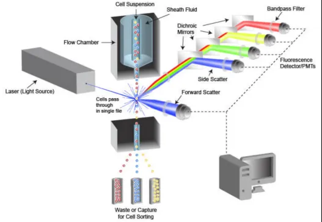
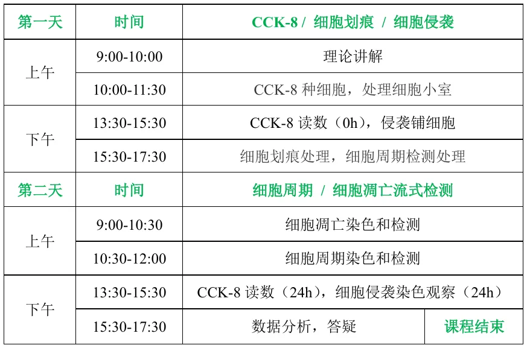
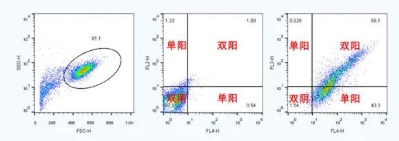
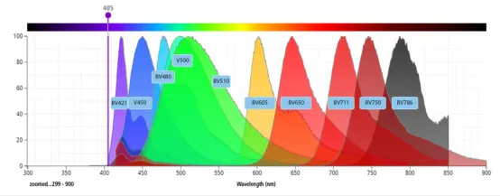
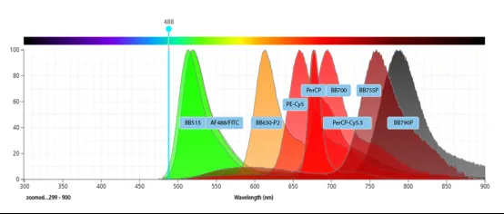
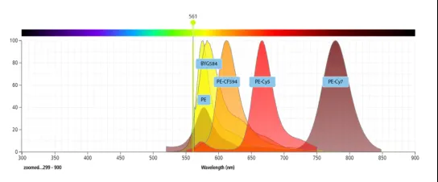
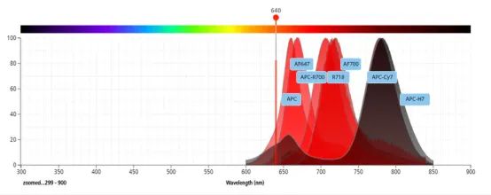
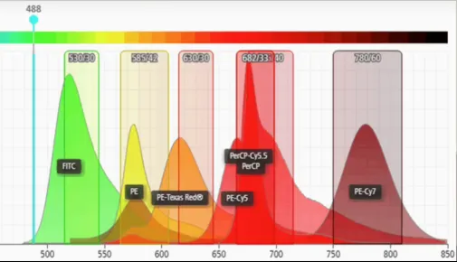

一文了解细胞流式术
原文：https://mp.weixin.qq.com/s?__biz=MzAwMzIzOTk5OQ==&mid=2247529204&idx=1&sn=dc70f79b6460e9a134d8dbee531fc3c7&chksm=9b3c0ba4ac4b82b2b83ecbf6861ef8c1a7b0c61d10637d583ee64c9e2bc424f3c799c4fb2482#rd 合集：实验基地

实验基地斥巨资引进的流式细胞仪到了，对实验技能学习感兴趣的小伙伴可参考：实验基地六月课表，现已加入流式细胞仪实操课程。流式细胞术（是对悬液中的单细胞或其他生物粒子,通过检测标记的荧光信号，实现高速、逐一的细胞定量分析和分选 的技术。流式细胞术广泛用于分析细胞表面和细胞内 分子的表达、鉴定并确定异质细胞群中的不同细胞类型、评估分离亚群的纯度以及分析细胞大小和容积。简直就是为单细胞数据验证量身定做的实验方法。

针对流式细胞仪的使用，我们特地开展了细胞功能实验周末学习班（2天），课程介绍如下：本课程旨在帮助学员完成肿瘤相关细胞功能实验的入门。本学习内容涵盖了最常规的的肿瘤细胞实验，手把手指导学员细致了解相关基础实验流程，掌握步骤要领，独立完成相关实验操作。学习内容：CCK-8细胞增殖 细胞划痕 细胞迁移/侵袭 细胞周期 细胞凋亡流式检测课程定价：3580元/人（实操）课表安排：
基本原理

细胞悬液制备与标记
首先要将待分析的细胞从组织或血液中分离出来，制备成单细胞悬液，并清洗掉杂质和非目标细胞。为了对特定细胞或细胞成分进行检测，通常需要对细胞进行标记 ，标记方法主要包括荧光标记 和磁珠标记等，荧光标记是最常用的方法，通过将荧光染料或荧光标记的抗体与细胞表面或内部的特定分子结合，使细胞在激光照射下发出荧光信号。
信号产生与检测
将制备好的单细胞悬液引入流式细胞仪中，在流动室内，细胞被高压液流形成装置形成的液流引导，逐个通过照射光束，如激光束。当细胞通过光束时会产生两种信号，散射光信号和荧光信号。
流式细胞仪的结构及作用
1
液路系统

主要作用是确保细胞单个排列通过，实现细胞的顺序流动，每次分析一个细胞，为信号检测提供良好的条件。
2
光路系统
包括光源、透镜、滤光片和检测器等。光源通常为激光器，产生的激光经过透镜聚焦后照射到细胞上，激发细胞产生散射光和荧光。滤光片用于分离不同波长的光信号，将特定波长的荧光信号引导到相应的检测器，检测器如光电倍增管等将光信号转换为电信号。****
3
电子系统
负责处理和保存由光学系统检测到的信号，并将这些信号转换为可用于分析的数字数据，以便进行后续的数据分析。
流式细胞术的应用
免疫学
用于检测和定量样品中存在的细胞类型，实现免疫表型分析，对免疫系统的各种组分进行表征，了解和监测免疫细胞群的数量和百分比变化。
血液学
可用于血液细胞的分析和分类，如检测白细胞、红细胞、血小板等的数量、形态和功能等，对血液系统疾病的诊断、治疗和预后评估具有重要意义。
肿瘤学
不仅能够检测肿瘤细胞表面的标志物，进行肿瘤细胞的鉴定和分型，还可以分析细胞周期、增殖能力、凋亡情况等，有助于了解肿瘤的发生、发展机制，为肿瘤的诊断、治疗和研究提供依据。
遗传学
可以用于检测细胞的DNA 含量、染色体数目等，对染色体异常疾病、基因突变等的检测和研究具有一定的价值。
细胞生物学研究
可用于研究细胞的信号转导通路、细胞功能分析、细胞内离子浓度测定等，为细胞生物学的基础研究提供有力的工具。
结果分析
1
散射光通道
散射光通道包括前向角散射（ FSC）和侧向角散射（ SSC）。
前向角散射（FSC）：
反映细胞大小。细胞体积越大，产生的FSC信号越强，有助于初步区分不同大小的细胞。
侧向角散射（SSC）：
指示细胞内部结构的复杂度和颗粒度。细胞内结构越复杂或颗粒越多，SSC信号越强，可用于区分细胞类型。
这两种散射信号结合使用，可以有效进行细胞分群和分类。
2
荧光通道
当细胞悬液通过流式细胞仪的流动室时，细胞逐一经过激光束照射。如果细胞表面结合了荧光素标记的抗体，荧光素在激光激发下会发出荧光信号 。这些信号的强度与细胞表面结合的荧光素数量成正比，从而反映了细胞上特定分子的表达水平。荧光信号由专门的检测器捕捉，并转换为可量化的数据，用于评估细胞表面标志物的表达量。这一过程使得精确分析单个细胞的生物标志物成为可能。
流式细胞术常见术语
圈门
划定某一区域的细胞群体，对其单独加以分析或分选。举例来说，如下左图，以FSC为横坐标，SSC为纵坐标，圈出想进行分析的细胞主群（设门），双击圈内，看FL4(APC)为横坐标，FL2(PE)为纵坐标，进行分析。下中图为阴性对照，由此可以圈出阴性群的范围，在下右图中就可以区分出APC单阳、PE单阳、APC和PE双阳的细胞。

FL1、 FL2、 FL3、FL4通道：
指不同的荧光通道。举个例子，我们用FITC/PE双标记的细胞，在488nm的激光激发下，这两种荧光染料分别发出波长不同的绿色和橙色荧光，然后将发出的荧光再通过滤光片分开，对应的是不同的波长的滤光片，一般在FL1通道是530nm的滤光片，在FL2通道是575nm的滤光片，这样就可以把在一起的荧光分开了。
FL2-W FL2-A FL2-H
流式细胞仪检测信号时，机器记录有三个参数，高度（H），宽度（W）和曲线下面积（A），H 和W都是直接测出的，而A是根据机器的设置就算得出。
调补偿
若两种以上的荧光素的发射光谱之间存在重叠，则需要调补偿。这就意味着一种荧光素发出的光可能被另一种荧光素的检测器检测到。实验时推荐选择光谱重叠小的染料。
黄色激光

蓝色激光

黄绿色激光

红色激光

流式配色搭配推荐

实验操作
（1）将所需数目的细胞分装入试管或小孔中。（通常，每次检测用 5x105 至1x106 个细胞）。通过离心使细胞沉淀下来，移除上清液。
（2）在 100 µl 稀释的一抗中重悬细胞，这种一抗按建议的稀释度或如通过滴定所确定那样以抗体稀释缓冲液配制。
（3）在冰上孵育 30 分钟至 1 小时。避光。
（4）在抗体稀释缓冲液或 1X PBS 中通过离心洗涤。弃去上清液。重复。如果使用直接偶联抗体，则跳到步骤 9。
（5）在 100 µl 稀释的荧光物质偶联的二抗（按建议稀释度用抗体稀释缓冲液制备）中重悬细胞。
（6）在冰上孵育 30 分钟。避光。
（7）用抗体稀释缓冲液进行离心洗涤。弃去上清液。重复一次。在 200-500 μl 抗体稀释缓冲液中重悬细胞后用流式细胞分析仪进行分析。
注意事项****
（ 1）用于调节补偿的标本必须单染。
（2）流式检测细胞离心、重悬次数较多，注意动作轻缓，避免损伤细胞。
（3）低水平表达的抗原优先匹配更明亮的荧光染料。
（4）收集足够多的事件，补偿依赖于荧光强度中位值的准确计算，如果事件太少，将无法准确计算。收集数量应多于5000个。
（5）调节电压时，如果检测的目标细胞体积较小，可以适当提高电压值。
实验基地
长期以来Biomamba都在自己的媒体矩阵中分享生信分析技能。生命科学毕竟是物质的科学，脱离了实验 总是玩不转的，大家的分析结果也需要去实验验证。一方面自己想在不同的领域里开疆扩土，追寻些新的可能；另一方面也想为大家的科研生涯全方面保驾护航，未来给大家提供新的服务、交流交流实验技能。所以，Biomamba联合浙江大学博士团队 组建了一个自己的实验室(Biomamba生信基地终于有基地 啦！)，base上海张江。目前还是百业待兴，大家有什么想法可以填写问卷 跟咱反馈反馈：
问卷链接，文末阅读原文可直达：https://www.wjx.cn/vm/tpYsP8D.aspx# 问卷二维码： 更多想法也可以直接添加我们的客服微信[Biomamba_zhushou]聊聊，我们也有专门的实验基地交流群。
实验室环境：
更多想法也可以直接添加我们的客服微信[Biomamba_zhushou]聊聊，我们也有专门的实验基地交流群。
实验室环境：


如何联系我们

 留一个领取资料、免费两周学习版服务器的微信号[Biomamba_zhushou]，方便各位随时交流。同时我们也构建了交流群矩阵，欢迎大家入群讨论。
大家可以阅读完这几篇之后添加给生信入门初学者的小贴士
如何搜索公众号过往发布内容
留一个领取资料、免费两周学习版服务器的微信号[Biomamba_zhushou]，方便各位随时交流。同时我们也构建了交流群矩阵，欢迎大家入群讨论。
大家可以阅读完这几篇之后添加给生信入门初学者的小贴士
如何搜索公众号过往发布内容
已有生信基地联系方式的同学无需重复添加

 您点的每个赞和在看，我都认真当成了喜欢
您点的每个赞和在看，我都认真当成了喜欢